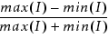

Intensity — Specified as a range of aerial image intensity values plus distances along the control site. Distances inside the polygon are expressed as a range of negative values reflecting distances from the drawn edge; distances outside the polygon are expressed as a range of positive values reflecting distances from the drawn edge.
Slope — Specified as an interval of Dintensity-per-micron values. In addition, you can either use the LOG keyword to use the LOG slope, or the YVAL keyword to evaluate the slope at the position where the image intensity matches the specified threshold.
Aerial Image Factor — Specified as a range of values using the C_factor_constraint keyword.
IMAX or IMIN — Specified as a single value.
Threshold — Specified as a range of values.
Contrast — Specified as
contrast = 
You must also include the extrema_distance, which defines a search window for the calculations.
For additional control over tagging based on aerial image properties, you can use the arguments NOT or EXTREMA_DISTANCE:
NOT — This option complements all subsequent constraints, instructing the application to tag those fragments that do not meet the specified constraints.
EXTREMA_DISTANCE — Used with IMAX, IMIN, or CONTRAST to define a search window for the calculations. This option requires a closed distance interval as an argument, such as “> -0.1 < 0.1”. The secondary keyword, QUAD_INTERP, instructs the operation to calculate these values using a three-point quadratic interpolation of the sample image values. By default, it does not use interpolation.
EXTREMA_DISTANCE is required when tagging is based on CONTRAST or tagging is based on intensity (IMIN or IMAX) using a resist model that is version 3 or later (VT5).
The following examples show the IMAGE tagging command in use.
Example 1: Identify line-end bridging by finding edges having an aerial image intensity greater than 0.3 for the entire range of 0 to 0.1 microns from the line end.
newTag t2 -how image line_end IMAGE > 0.3 DISTANCE >0 <=0.1Example 2: Tag isolated lines that may not print because the aerial image is low for distances both inside and outside the drawn edge. The tag iso_line must be defined before this command is issued.
newTag t3 -how image iso_line IMAGE < 0.1 DISTANCE > -0.5 < 5.0Example 3: Tag line ends with a contrast less than 0.7
newTag low_contrast_ends -how IMAGE line_end CONTRAST < 0.7